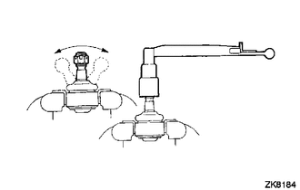
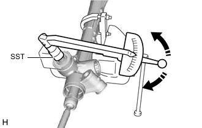

STEERING GEAR INSPECTION

PROCEDURE
-
INSPECT TIE ROD END SUB-ASSEMBLY LH
-

Secure the tie rod end sub-assembly LH in a vise between aluminum plates.
Note
Do not overtighten the vise.
-
Install the nut to the stud bolt.
-
Flip the ball joint back and forth 5 times.
-
Using a torque wrench and the nut, turn the stud bolt continuously at a rate of 2 to 4 seconds per turn, and check the turning torque on the 5th turn.
Standard Turning Torque 0.49 to 3.43 N*m (5 to 34 kgf*cm, 5 to 30 in.*lbf) If the turning torque is not within the specified range, replace the tie rod end sub-assembly LH with a new one.
-
Check that the dust cover is not cracked and that there is no grease on it.
If the dust cover is cracked or there is grease on it, replace the tie rod end sub-assembly LH with a new one.
-
-
INSPECT TIE ROD END SUB-ASSEMBLY RH
Tech Tips
Perform the same procedure as for the LH side.
-
INSPECT TOTAL PRELOAD
Note
Inspect the total preload in a no-load condition by removing the tie rod end sub-assemblies RH and LH, and steering rack boots.
-

Install SST to the pinion shaft and turn it left and right 5 times or more.
- SST
- 09616-00020
-
Using SST and a torque wrench, turn the pinion shaft continuously at a rate of 4 to 6 seconds per turn to inspect the total preload of the steering gear assembly.
Standard Preload 1.5 to 2.4 N*m (16 to 24 kgf*cm, 14 to 21 in.*lbf) Note
Inspect the total preload around the steering rack center position.
If the total preload is not within the specified range, replace the steering gear assembly with a new one.
-